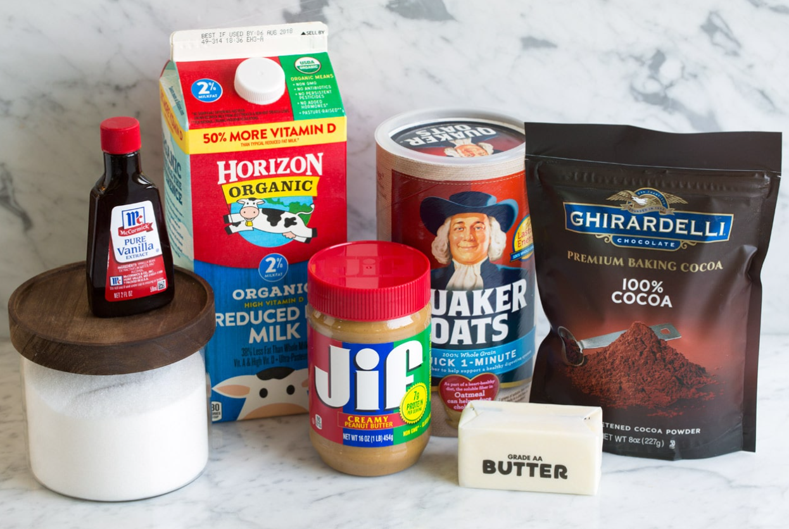

These no-bake cookies are a quick and easy treat that's perfect for any occasion.
Rating: ★★★★☆
12 servings
Ingredients
Sugar
Butter
Milk
Unsweetened cocoa powder
Vanilla
Quick oats
Peanut butter

Preparation
line two baking sheets with parchment paper (or just spread a long sheet of the parchment onto the counter), or have 29 cupcake liners set out.
in a 2.5 - 3-quart saucepan, combine sugar, butter, cocoa powder, and milk.
Set a saucepan over medium heat (I like to use the largest burner on the stove) and begin whisking. Cook and whisk frequently until it reaches a boil, then once it reaches a full rolling boil, stop stirring and let it boil for 1 minute.
Remove the mixture from the heat, then immediately add vanilla, peanut butter, and oatmeal. And stir to blend well.
Pour batter into the prepared loaf pan.
Drop mixture onto prepared parchment, dropping 2 Tbsp at a time (a medium cookie scoop works well here, or just use two large spoons).
Let cookies set, then enjoy! If you want to speed up the setting transfer to the refrigerator. Store the cookies at room temperature in an airtight container (or in the fridge if you like them cold).